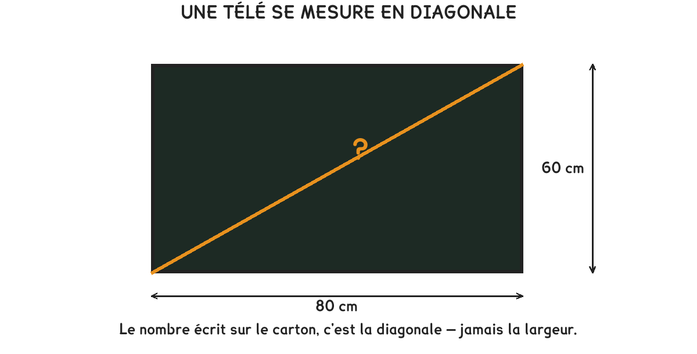

CAP Électricien · 1re année
Une télé se vend en pouces, c'est-à-dire en diagonale. Le meuble, lui, se mesure en largeur : c'est tout le problème.
5 exercices · 1 figure
Savoirs travaillés

Un écran de 80 cm sur 60 cm. Sa diagonale se calcule avec le théorème de Pythagore : on additionne les deux carrés, puis on prend la racine.
L’hypoténuse est le côté face à l’angle droit. Elle est toujours plus longue que chacun des deux autres, et plus courte que leur somme : un résultat hors de ces bornes est une erreur de calcul.
Exercice · GE
Calculez la diagonale de cet écran de 80 cm sur 60 cm.
Une télé se vend en pouces, et un pouce vaut 2,54 cm.
Exercice · CN
Convertissez cette diagonale de 100 cm en pouces. Arrondissez à l’unité.
Exercice · CN
On hésite avec un modèle de 55 pouces. Combien mesure sa diagonale en centimètres ?
Exercice · CN
Sur ce modèle, la largeur vaut 0,8 fois la diagonale. Combien mesure-t-elle ?
Comparer une diagonale à une largeur. Le meuble mesure 1,10 m de large ; la télé se vend en diagonale. Sans passer de l’une à l’autre, on se trompe de grandeur, et de quelques centimètres.
Exercice · GE
Est-ce que ça rentre ? Répondez en deux phrases : ce qui rentre, ce qui ne rentre pas, et de combien.
Deux centimètres décident de l’achat, et personne ne les voit sans calcul. La diagonale ne se compare jamais directement à un meuble.
Ce site rappelle la méthode. Aucun corrigé, rien n'est noté.